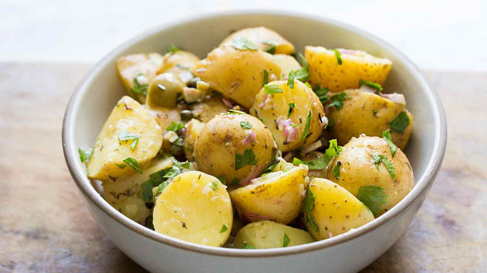

Patato Salad

Easy Southern Potato Salad
This potato salad includes eggs, celery, and relish and should be served warm.
- 4 potatoes
- 4 eggs
- ½ stalk celery, chopped
- ¼ cup sweet relish
- 1 clove garlic, minced
- 2 tablespoons prepared mustard
- ½ cup mayonnaise
- Bring a large pot of salted water to a boil. Add potatoes and cook until tender but still firm, about 15 minutes; drain and chop.
- Place eggs in a saucepan and cover with cold water. Bring water to a boil; cover, remove from heat, and let eggs stand in hot water for 10 to 12 minutes. Remove from hot water; peel and chop.
- In a large bowl, combine the potatoes, eggs, celery, sweet relish, garlic, mustard, mayonnaise and salt and pepper. Gently mix together and serve warm.
Home